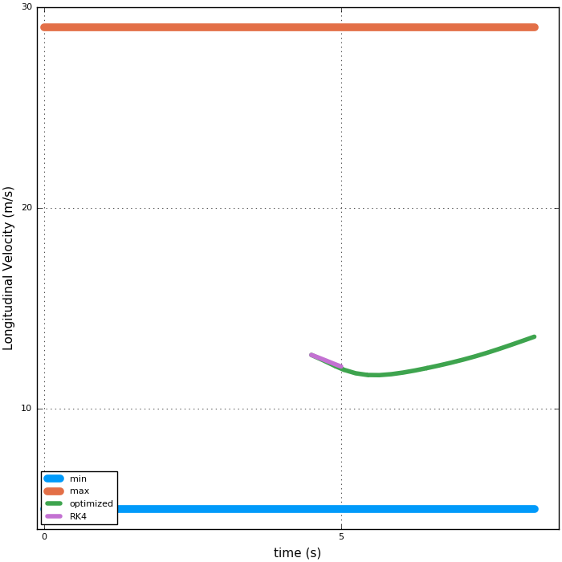
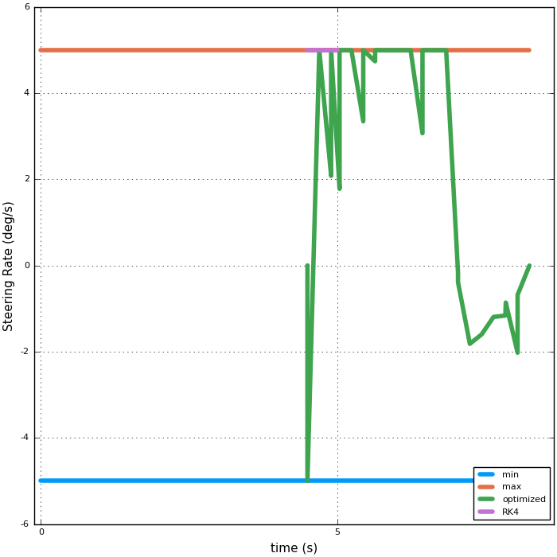
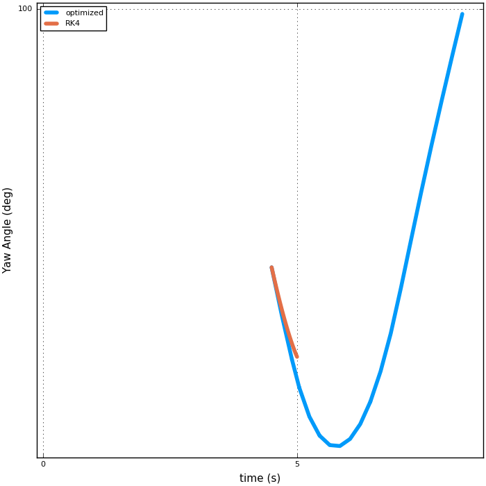
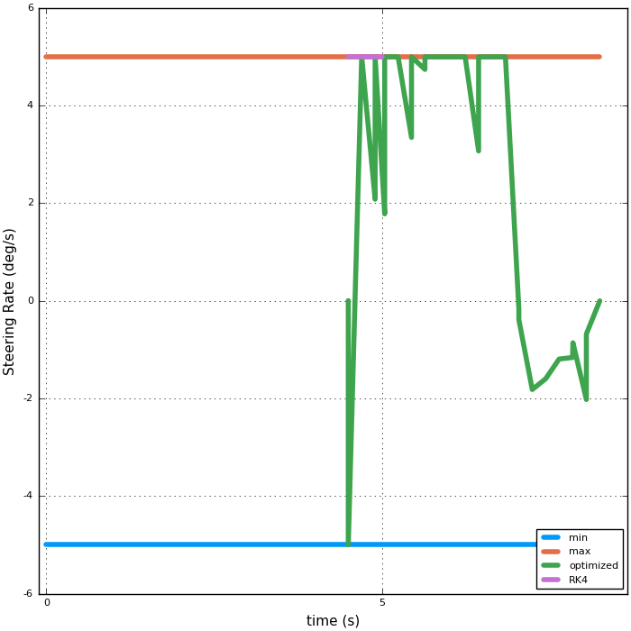
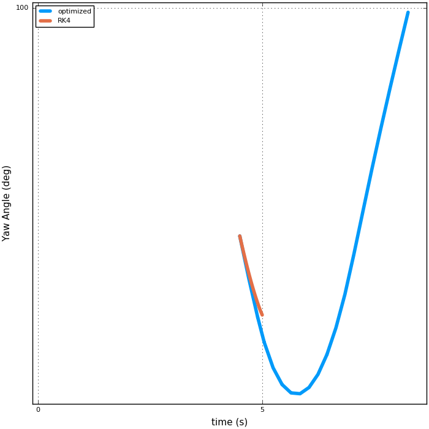

A closer look at the “local point of infeasibility”:¶
- Notes & Conclusions:
- Some of the signals are very jumpy
- It is strange that the actual SR matches the optimized one so poorly
Taking a look at the states:

A closer look at the states and controls:


 


